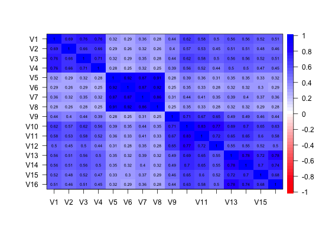

John Schmid and John M. Leiman (1957) discuss how to transform a hierarchical factor structure to a bifactor structure. Schmid contains the example 12 x 12 correlation matrix. schmid.leiman is a 12 x 12 correlation matrix with communalities on the diagonal. This can be used to show the effect of correcting for attenuation. Two additional data sets are taken from Chen et al. (2006).
data(Schmid)
Two artificial correlation matrices from Schmid and Leiman (1957). One real and one artificial covariance matrices from Chen et al. (2006).
Schmid: a 12 x 12 artificial correlation matrix created to show the Schmid-Leiman transformation.
schmid.leiman: A 12 x 12 matrix with communalities on the diagonal. Treating this as a covariance matrix shows the 6 x 6 factor solution
Chen: An 18 x 18 covariance matrix of health related quality of life items from Chen et al. (2006). Number of observations = 403. The first item is a measure of the quality of life. The remaining 17 items form four subfactors: The items are (a) Cognition subscale: ``Have difficulty reasoning and solving problems?" ``React slowly to things that were said or done?"; ``Become confused and start several actions at a time?" ``Forget where you put things or appointments?"; ``Have difficulty concentrating?" (b) Vitality subscale: ``Feel tired?" ``Have enough energy to do the things you want?" (R) ``Feel worn out?" ; ``Feel full of pep?" (R). (c) Mental health subscale: ``Feel calm and peaceful?"(R) ``Feel downhearted and blue?"; ``Feel very happy"(R) ; ``Feel very nervous?" ; ``Feel so down in the dumps nothing could cheer you up? (d) Disease worry subscale: ``Were you afraid because of your health?"; ``Were you frustrated about your health?"; ``Was your health a worry in your life?" .
West: A 16 x 16 artificial covariance matrix from Chen et al. (2006).
John Schmid Jr. and John. M. Leiman (1957), The development of hierarchical factor solutions.Psychometrika, 22, 83-90.
F.F. Chen, S.G. West, and K.H. Sousa.(2006) A comparison of bifactor and second-order models of quality of life. Multivariate Behavioral Research, 41(2):189-225, 2006.
Y.-F. Yung, D.Thissen, and L.D. McLeod. (1999) On the relationship between the higher-order factor model and the hierarchical factor model. Psychometrika, 64(2):113-128, 1999.
#> Factor Analysis using method = minres #> Call: fa(r = Schmid, nfactors = 6, rotate = "oblimin") #> Standardized loadings (pattern matrix) based upon correlation matrix #> MR1 MR4 MR6 MR2 MR3 MR5 h2 u2 com #> V1 0.80 0.00 0.00 0.00 0.00 0.00 0.637 0.36 1 #> V2 0.90 0.00 0.00 0.00 0.00 0.00 0.814 0.19 1 #> V3 0.00 0.00 0.70 0.00 0.00 0.00 0.485 0.52 1 #> V4 0.00 0.00 0.61 0.00 0.00 0.00 0.364 0.64 1 #> V5 0.00 0.00 0.00 0.00 0.77 0.00 0.599 0.40 1 #> V6 0.00 0.00 0.00 0.00 0.42 -0.01 0.171 0.83 1 #> V7 0.00 0.00 0.00 0.00 0.00 0.77 0.589 0.41 1 #> V8 0.00 0.00 0.00 0.00 0.01 0.18 0.033 0.97 1 #> V9 0.02 0.78 0.01 0.02 0.00 0.01 0.635 0.36 1 #> V10 -0.04 0.60 -0.02 -0.03 -0.01 -0.01 0.326 0.67 1 #> V11 0.00 0.00 0.00 0.60 0.00 0.00 0.363 0.64 1 #> V12 0.00 0.00 0.00 0.70 0.00 0.00 0.486 0.51 1 #> #> MR1 MR4 MR6 MR2 MR3 MR5 #> SS loadings 1.45 0.96 0.85 0.85 0.77 0.62 #> Proportion Var 0.12 0.08 0.07 0.07 0.06 0.05 #> Cumulative Var 0.12 0.20 0.27 0.34 0.41 0.46 #> Proportion Explained 0.26 0.17 0.15 0.15 0.14 0.11 #> Cumulative Proportion 0.26 0.44 0.59 0.75 0.89 1.00 #> #> With factor correlations of #> MR1 MR4 MR6 MR2 MR3 MR5 #> MR1 1.00 0.43 0.56 0.14 0.16 0.21 #> MR4 0.43 1.00 0.38 0.29 0.17 0.22 #> MR6 0.56 0.38 1.00 0.12 0.14 0.19 #> MR2 0.14 0.29 0.12 1.00 0.05 0.07 #> MR3 0.16 0.17 0.14 0.05 1.00 0.23 #> MR5 0.21 0.22 0.19 0.07 0.23 1.00 #> #> Mean item complexity = 1 #> Test of the hypothesis that 6 factors are sufficient. #> #> The degrees of freedom for the null model are 66 and the objective function was 1.9 #> The degrees of freedom for the model are 9 and the objective function was 0 #> #> The root mean square of the residuals (RMSR) is 0 #> The df corrected root mean square of the residuals is 0 #> #> Fit based upon off diagonal values = 1 #> Measures of factor score adequacy #> MR1 MR4 MR6 MR2 MR3 MR5 #> Correlation of scores with factors 0.93 0.84 0.81 0.78 0.80 0.78 #> Multiple R square of scores with factors 0.87 0.71 0.66 0.61 0.64 0.61 #> Minimum correlation of possible factor scores 0.73 0.43 0.32 0.23 0.27 0.22round(cov2cor(schmid.leiman),2)#> V1 V2 V3 V4 V5 V6 V7 V8 V9 V10 V11 V12 #> V1 1.00 1.00 0.56 0.56 0.15 0.15 0.23 0.23 0.40 0.40 0.13 0.13 #> V2 1.00 1.00 0.56 0.56 0.15 0.15 0.23 0.23 0.40 0.40 0.13 0.13 #> V3 0.56 0.56 1.00 1.00 0.13 0.13 0.20 0.20 0.35 0.35 0.12 0.12 #> V4 0.56 0.56 1.00 1.00 0.13 0.13 0.20 0.20 0.35 0.35 0.12 0.12 #> V5 0.15 0.15 0.13 0.13 1.00 1.00 0.24 0.24 0.15 0.15 0.05 0.05 #> V6 0.15 0.15 0.13 0.13 1.00 1.00 0.24 0.24 0.15 0.15 0.05 0.05 #> V7 0.23 0.23 0.20 0.20 0.24 0.24 1.00 1.00 0.23 0.23 0.08 0.08 #> V8 0.23 0.23 0.20 0.20 0.24 0.24 1.00 1.00 0.23 0.23 0.08 0.08 #> V9 0.40 0.40 0.35 0.35 0.15 0.15 0.23 0.23 1.00 1.00 0.27 0.27 #> V10 0.40 0.40 0.35 0.35 0.15 0.15 0.23 0.23 1.00 1.00 0.27 0.27 #> V11 0.13 0.13 0.12 0.12 0.05 0.05 0.08 0.08 0.27 0.27 1.00 1.00 #> V12 0.13 0.13 0.12 0.12 0.05 0.05 0.08 0.08 0.27 0.27 1.00 1.00